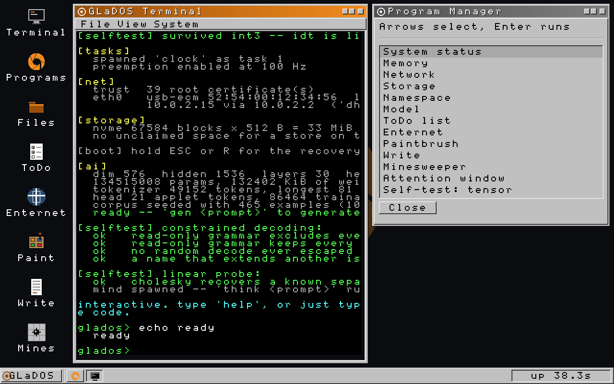
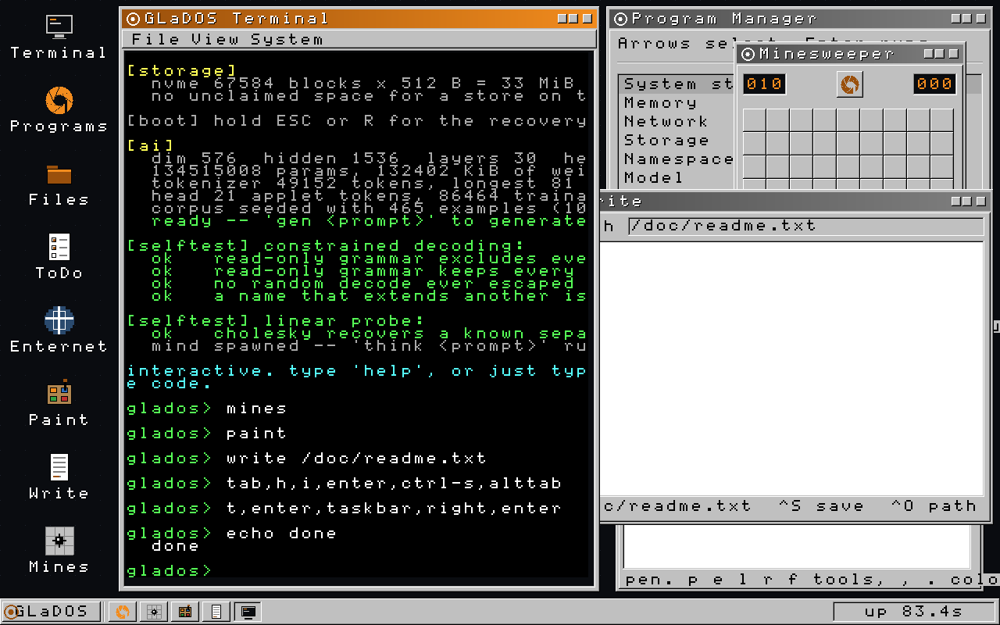
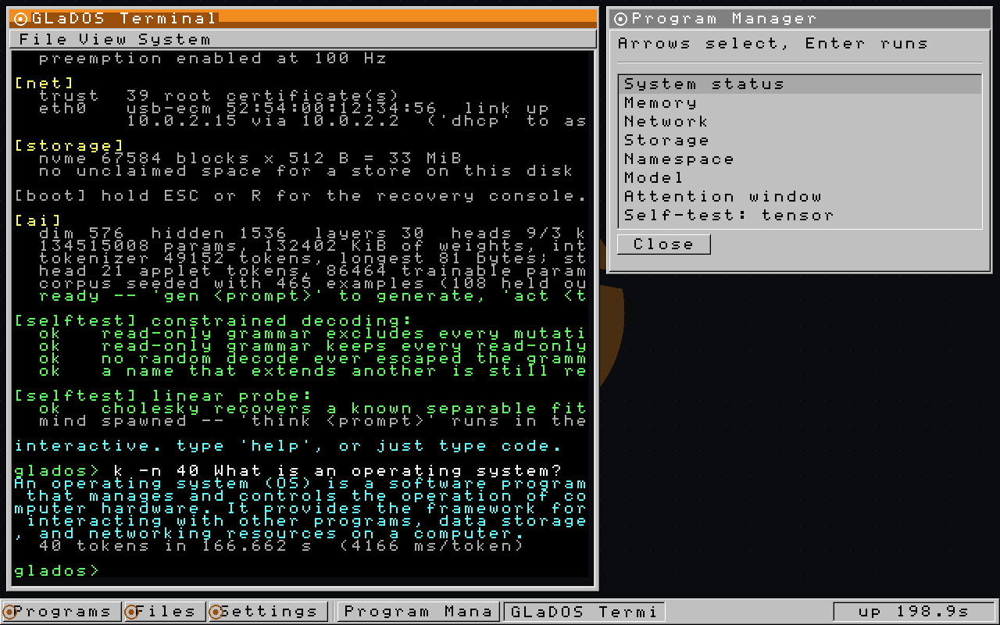

What I Do
I write systems software and I work on language models, and the part I care about is where those stop being two jobs. Over the last year that has meant a ring-0 kernel in Rust with a model running inside it, an inference engine that streams weights off an SSD so a 2.78-trillion-parameter model runs on a laptop, and a year of multi-agent orchestration that took one company's inference bill down by 89 percent.
Everything on this page has a repository behind it, and every number was measured rather than estimated. Where something is unverified, it says so.
Where I Am
| Location | Vilnius, Lithuania. EET, UTC+2. |
| Available | Now. Remote, on site, or relocation. |
| Wanted | Systems, inference, agent infrastructure. |
| a.leilion@euroswarms.eu |
Latest
- GLaDOS: the taskbar shows windows by pictogramAug 21 2026
- GLaDOS: three programs, Paintbrush, Write, MinesweeperAug 21 2026
- RustLMHub: run any local model on any hardwareAug 21 2026
- GLaDOS: composed rendering and a complete pointerAug 20 2026
- GLaDOS: Qwen3.5 hybrids run in the kernelAug 19 2026
- Reverse-hawkes: a hypothetical cascade modelAug 17 2026
- kimi-k3: 2.78T parameters on 8 GB of RAMAug 10 2026
- Left Swarms Corporation after a yearJul 2026
GLaDOS: An Operating System With A Model In The Kernel
github.com/IlumCI/GLaDOS
· Rust, no_std, UEFI, x86-64 ·
40,000 lines across 93 files
GLaDOS is not a Unix. There is no user/kernel split, no syscall boundary, no process isolation, and one address space. That sounds like a shortcut and is the opposite of one: it is the arrangement in which a tool call from the model is a function call, with no marshalling and nothing to cross. The model does not sit on top of the operating system; it is a component of it, on the same footing as the scheduler.
Because there is no libc and no Unix to inherit from, everything under the model is also mine:
- Inference in kernel space. Qwen3-0.6B, int8, referenced in place in the firmware pool rather than copied to the heap, because 570 MB copied twice is 570 MB you do not have. Qwen3.5 hybrids load through a checkpoint format that carries the layer schedule explicitly instead of deriving it, so a model that breaks the expected pattern fails at load rather than running wrong.
- Cryptography, written from scratch. TLS 1.3, X25519, ChaCha20-Poly1305, SHA-2, ECDSA over P-256 and P-384, RSA. Primitives chosen for how checkable they are rather than how fashionable: ChaCha20 over AES-GCM because it has no key-dependent table lookups. Eleven sets of published RFC vectors run at every boot, because this is the one place where writing it yourself is a liability rather than a virtue. A broken implementation here produces output that works perfectly and is not secure.
- A network stack. Ethernet, ARP, IPv4, TCP, UDP, DHCP, DNS,
drivers for e1000 and RTL8168, and a WPA2 supplicant verified against the
IEEE vectors. The polling layer queues rather than dispatching, because a
state machine driven from inside
pollcan re-enter its own control block while an earlier borrow is still live. - Storage. NVMe, and a content-addressed object store: files named by the SHA-256 of their contents and assembled into Merkle trees, so a copy is O(1) and a snapshot is one root hash. Writes are locked by default and every error path re-locks, because a safety mechanism you can leave open is decoration.
- A desktop. Composited window manager, a full pointer, three applications. The scene is repainted whole and then diffed against a shadow buffer, so the window manager stays obviously correct and only the rows that changed reach the framebuffer.

Above: booted. Selftests for the heap, the clock, the namespace, constrained decoding and the linear probe run every time and print pass or fail per line. There is no host test runner for a UEFI binary, so that log is the test suite.

Three applications and a window manager, driven from the shell because serial cannot inject PS/2 packets.

The kernel's own model answering in kernel space, at 4,166 ms per token under QEMU, where generation is bound by bytes read rather than by arithmetic.
The only code in the tree I did not write is Rust's core,
and 509 hardware initialisation constants for one wireless chipset,
transcribed from Linux because no datasheet publishes them, in a single
file that says so at the top.
Inference On Hardware That Should Not Fit It
RustLMHub
github.com/IlumCI/RustLMHub · if a model fits on the drive, it should run
An inference and training engine in Rust with nothing underneath it: no
PyTorch, no llama.cpp, no CUDA, no BLAS. Feed-forward weights stream from
NVMe through O_DIRECT, bypassing the page cache, while
attention and embeddings stay resident. On the reference machine, an
i7-12650H with 16 GB, that resident set is about 5.7 GB; the rest
of the model stays on the disk, where it belongs. Each piece of it is there
because a measurement justified it.
| Technique | Effect |
|---|---|
| Int8 activation kernel | 2.3 to 2.55× on matmul |
| Speculative decoding, native multi-token head | 1.23 to 1.28×, verified in one forward pass |
| Certified activation sparsity | up to 27.6% of neurons skipped, output provably byte-identical |
| LUT-GEMM on AVX2 | 4-bit weights by table lookup |
| Frozen-weight streaming, adapters only | fine-tunes a 27B model in 16 GB |
| Differential test suite | 267 tests, bit-exact against reference implementations |
kimi-k3-in-rust
github.com/IlumCI/kimi-k3-in-rust · 2.78 trillion parameters on 8 GB of RAM
Kimi K3's checkpoint is 1.56 TB. Routing activates 16 experts of 896 per layer per token, which leaves 96.3 percent of the weights dormant at any moment, which means they can live on disk behind an LRU cache instead of in memory. The dense trunk is pinned as far as the memory budget allows and streamed beyond it. The property worth having is not the speed:
| Host memory | Seconds per token | Output |
|---|---|---|
| 8.24 GB | 26.5 | identical |
| 224 GB | 5.6 | identical, byte for byte |
More memory buys seconds and buys nothing else. That is the design goal, and it is why the same trick works inside a kernel with no allocator worth the name.
Orchestration, And What It Saved
AI/ML Engineer, Swarms Corporation · remote · August 2025 to July 2026
A year on multi-agent orchestration: routing, scheduling, and the unglamorous accounting of which model gets asked what. The figures below are the ones the company measured.
| Measure | Before | After |
|---|---|---|
| Large-scale API and inference spend | baseline | 11% of it, an 89% cut |
| Multi-agent workflow execution | baseline | 118× the speed |
| Cost of running those workflows | baseline | 21% of it |
The rest of the job was designing reasoning architectures and orchestration methods for multi-agent systems and landing them in the shipping framework rather than leaving them as prototypes, and turning arXiv papers into things that ran. The research side continued on its own account afterwards: CR-CA, causal inference with counterfactual analysis for autonomous agents, and Stable Cognition, a long-context reasoning architecture built to be extended rather than retrained.
How The Work Gets Done, And How It Gets Checked
Most of this is written with coding agents driving, and I would rather say so on my own page than have someone work it out. Forty thousand lines of kernel Rust in three weeks is not a typing speed I have. What it does require is knowing what to ask for, reading everything that comes back, and having an answer to the question the agent cannot answer: how would I know if this were wrong?
That question is most of the work, because the failures in this territory are quiet. GLaDOS spent weeks with its rotary position embeddings pairing dimension i with 2i instead of with i + d/2. Both are norm-preserving rotations by the same angles, so there was no NaN, no drift, no error, no crash. The model stayed fluent and simply attended by a scrambled notion of distance, which is indistinguishable from a small model being small. It cost the difference between "The capital of France." and "The capital of France is Paris." Nothing caught it but a numeric oracle in NumPy that the kernel was made to agree with, token by token.
- Every subsystem has an oracle. The cryptography has RFC vectors. The model has a reference implementation that reads the same converted checkpoint, so a conversion bug shows up there too and only a kernel bug shows up as a mismatch. The tokenizer is diffed against the reference library rather than eyeballed, because a tokenizer that is subtly wrong produces text that still looks like text.
- The boot log is the test suite. Pass or fail per line, every boot. An ECDSA break sat visible in it for an entire debugging cycle while I was slicing that output away, which is its own lesson about what "we have tests" is worth.
- Negative results stay in the tree. Training the adapter head hurt at this data scale. The Product-of-Experts council did not improve accuracy. Both are still in the repository, because the reason to know them is the reason they were worth measuring.
- Measurement gets designed before it gets trusted. The evaluation harness exists because the measurement was got wrong three separate times: a grid sweep scored on the test set, cross-validation folded by template family, and a test set that moved whenever the corpus was appended to. Three splits now, validation spent freely, the test slice read once.
An agent will hand you a confident wrong answer at speed. The job is building the thing that disagrees with it.
Skills
| Languages | Rust, Python, C, C++, Go, TypeScript, SQL |
| Models | Transformer internals (attention geometry, RoPE, RMSNorm, tokenizers), int8 quantisation, KV-cache budgeting, constrained decoding, inference optimisation, multi-agent orchestration, PyTorch |
| Systems | no_std and UEFI, x86-64, memory management, TCP/IP, applied cryptography, NVMe and PCIe, Linux, FastAPI, distributed infrastructure |
| Education | Vilnius “Vyčio” Gymnasium, secondary education completed |
Hire Me
Open to systems, inference and agent-infrastructure work: remote across Europe or the United States, on site in Vilnius, or relocation. Mail is the fastest route, and the résumé is one page.
| a.leilion@euroswarms.eu | |
| Phone | +370 665 14109 |
| GitHub | github.com/IlumCI |
| arron-leilion | |
| Résumé | resume.pdf |
| Also | euroswarms.eu |